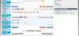
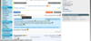
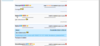

JVCMaster
JVCMaster est une extension navigateur compatible avec Google Chrome 21+, Chromium 18+, Mozilla Firefox 14+, Opera 12+, ajoutant des fonctionnalités aux forums de Jeuxvideo.com.
Via un panneau de gestion d'extensions, activez ou non des fonctionnalités d'un simple clic.


Maintenant, vous pouvez :
- Afficher des informations d'un pseudo à côté de celu left(sexe, rang)
- Afficher la CDV du pseudo dans une lightbox, lors du clic sur celui-ci
- Afficher les images de NoelShack dans une lightbox
- Cacher les posts des bots (flood)
- Citer un ou des post(s)
- Cacher un ou des posts, et les posts d'un pseudo
Extensions disponibles
Des infos sur un pseudo?
Soyez informé du sexe et du rang d'un pseudo par un simple coup d'oeil
Vous voulez citer un post?
Un bouton vous facilite la tâche! Enfin une manière propre pour citer un post!


Marre des bots?
L'extension Antibot détecte et cache automatiquement le spam/les posts des bots (août 2012)
Marre du nouveau NoelShack? Vous ne le verrez plus!
Cliquer sur un lien ou une miniature NoelShack, et l'image s'ouvre dans une Lightbox


Un post, ou un pseudo que vous n'aimez pas?
Avec 2 boutons, cachez simplement un post, ou tout les posts d'un pseudo


Une transition plus classe pour un visionnage de CDV?
Cliquez sur le pseudo, et sa CDV s'ouvrira dans une Lightbox
